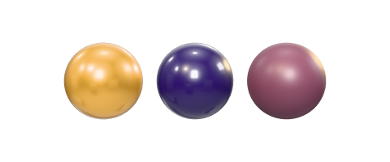
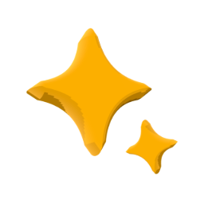
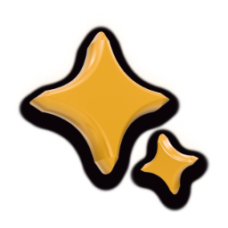
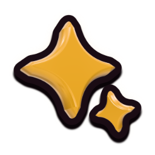
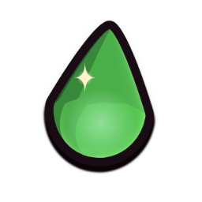
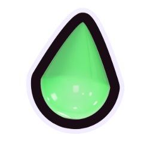
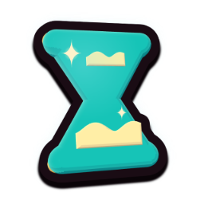
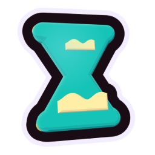

Law 9 of 24 · Time
Tidewright's Ledger
Every vault door in this realm opens one beat late.
1 left
Rank II
Ruleborn interface · style board
Every surface is a crafted object a thief would pocket: fired enamel, struck gold, oiled oak, saddle leather, smoked glass and old parchment. One warm key light falls from the top left on all of them. The materials dress §21.8's own surfaces in §21.2's and §21.8's own colours: they add grain, bevel, gloss and light, never a hue.
Five materials, the type, the studio light, the outline and glint rules, four hero icons and each material's high-contrast form. Add ?hc=1 to the address to see the whole board in high contrast.
Material 1 · enamel
Dresses §21.8's dark surface, the violet card from #261A4C down, as fired enamel: a glassy glaze, a hot spot where the key lands, a bevelled edge.
Law 9 of 24 · Time
Every vault door in this realm opens one beat late.
Material 2 · gold
Dresses §21.8's gold for main actions as struck, brushed metal on a thick lip. Words sit on its upper half, where the gold is lightest.
Material 3 · wood and leather
Oak, from §21.2's wood and the oak frame, holds things; §21.8's leather is what a hand presses. Grain runs along the plank; leather is pebbled and stitched.
Material 4 · glass
Dresses §21.8's dark glass at 78% as smoked glass with a gold rim: the world blurs behind it and a sheen rakes across from the key. Checked over §21.2's three skies.
Material 5 · parchment
Dresses §21.8's parchment, #FFFBF0 to #F1E3C4 with brown ink, as old paper: long fibres, edges browned with handling.
Contract · Tide Vault
Bring two bags and a Time crew member. The vault door opens one beat late.
Small words in the lighter brown are bold, as §21.8's tertiary text is.
Type · §21.8 as written
Marcellus for titles and law names; Manrope for labels, body and every number that changes, with tabular figures; Lilita One for big numbers that do not change, outlined in ink.
The studio light
Every rendered piece stands in one studio, so a set of sixty stays one family. Gold, enamel and leather here, in studio.html's light.

Outline and glint
The render, then its glow and drop, then the ink outline, then a painted inner light and the glints. The same four steps finish every icon.



Four hero icons
Starlight, Essence, a law of Time in its hourglass frame, and the loot bag: modelled, lit in the studio and finished by the rules, at 256 pixels.




High contrast · §21.8
Opaque, flat, outlined at 3 points, with no glass: grain, glaze, gloss, sheen, blur and glints go. Dark surfaces take a light ring outside the ink.